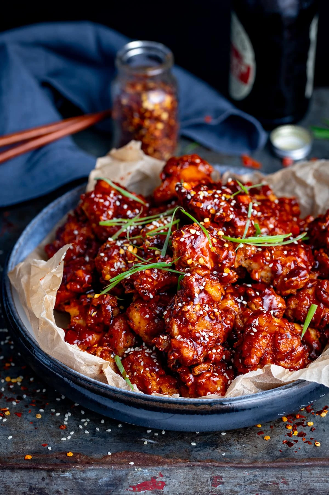

Korean Fried Chicken

Here is a recipe on how to make Korean Fried Chicken
Ingredients for the Chicken
- Garlic Salt
- Celery Salt
- Thyme
- Salt
- Pepper
- Paprika
- Chili Flakes
- Baking Powder
- White Pepper
- Buttermilk
Ingredients for the Sauce
- Gochujang
- Chili Flakes
- Vegetable Oil
- Sesame Oil
- Honey
- Soy Sauce
- Brown Sugar
- Sesame Seeds
- Garlic
- Ginger
- Spring Onions
Steps
-
First we marinade the chicken in buttermilk, salt,
white pepper and garlic salt.
-
Then we coat the chicken in a mixture of gochujang
paste, honey, brown sugar, soy sauce, garlic and ginger that's been
bubbled together until stick and syrupy.
- Fry the chicken until golden and crispy.
-
Pour the mixture over the crispy chicken and top with sesame seeds,
spring onions, and a few red pepper flakes.
- Enjoy silently with no distractions.